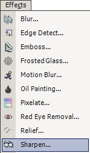

Sharpen Effect
|
 The Sharpen Effect (Effects-->Sharpen) makes the colors sharper and the edges more discernable. The user can select from the slide bar the intensity of the sharpening.
|
An image altered by the Sharpen Effect:
| Original Image | Sharpen Setting: 2 | Sharpen Setting: 3 | Sharpen Setting: 4 | ||||
|